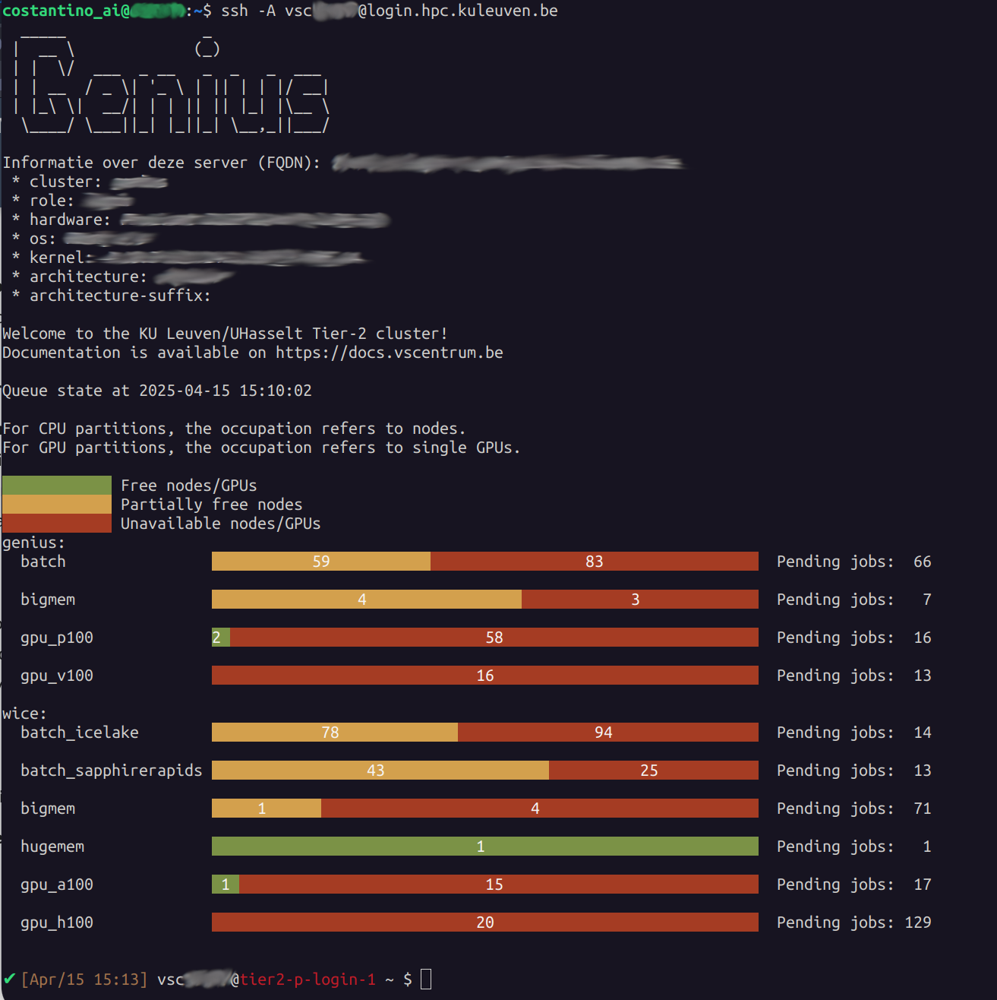
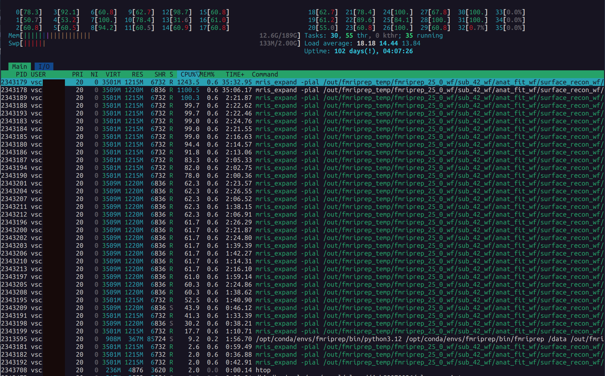

KU Leuven HPC: Getting Started¶
This guide describes how to connect to the KU Leuven/VSC HPC cluster, manage your data, and run fMRIPrep.
Login Node
When you connect via SSH, you land on a login node. Do not run compute-intensive tasks here, because login nodes are shared among tens of users. Submit jobs to the compute (CPU or GPU) nodes via Slurm.
Change directory after login
After a login, you land on your home directory $VSC_HOME which has only 3GB quota (by design).
This small volume is easy to fill up by mistake; hence, it is recommended to always change the working directory after login
to your $VSC_DATA (75 GB) or to your $VSC_SCRATCH (500 GB) upon login, e.g.:
This ensures you work in a directory with persistent storage (your files are not deleted) and sufficient disk space. Beware that any files in your scratch folder which is not accessed for 30 days will be automatically deleted, and scratch folder (as the name proposes) has no backup.
VSC offers a full documentation of all the services, but in case of question of problems, you may contact the local support team at KU Leuven.
1. Prerequisites¶
- You have a valid VSC account (e.g.,
vsc12345). Request one here. - For Windows users, install MobaXterm (SSH client) and FileZilla or WinSCP for file transfer; for Mac/Linux users, it is sufficient to use the terminal (has built-in SSH) and FileZilla for file transfer.
- You have logged into the HPC firewall before attempting SSH.
- You have requested introductory credits (2 million credits for 6 months) via this form.
2. Connecting to the Cluster¶
Once your account is active, you may follow these steps to login through Multi-Factor Authentication (MFA) depending on your choice of OS. The two main options are:
- KU Leuven OnDemand: a browser-based graphical interface. Follow the instructions in Login to Open OnDemand. Once logged in, you will see a dashboard with options to launch interactive sessions, submit jobs, and manage files. Navigate to the terminal interface by clicking the Login Server Shell Access button.
- SSH-based login: a terminal-based interface. Follow the instructions in Connecting with an SSH agent. Here, you connect to the cluster by directly opening the terminal interface on your local machine, using the Terminal, Powershell or whichever shell program.
After a successful login, you will see something like:

Look at the last line:
which suggests we are connected to the login node tier2-p-login-1 as vsc12345 (your VSC username). From now on, what we type in the terminal will be executed on the login node. Note that the login nodes are only meant to move your data around, submit and monitor your jobs, and write/edit your scripts. For all other purposes (actual computation, pre-/post-processing and software installation), you have to start an
interactive or batch job using Slurm.
To exit the ssh session and go back to your local terminal, type exit.
3. Data Management on the HPC¶
Your VSC account comes equipped with several folders, each with different characteristics. When logging in, you automatically land in your home directory, which is located at /user/leuven/123/vsc12345. This path is stored in the variable VSC_HOME, which you check by typing echo $VSC_HOME in the terminal. Likewise, other important directories are stored in variables names. To navigate quickly to any of these directories, you can use the cd command followed by the variable name, e.g., cd $VSC_DATA to move to your data directory.
Folder Structure:
VSC_HOME: Small quota, do not use it at all.VSC_DATA: Persistent but slow, larger capacity. Store big data, installed packages (e.g., Miniforge/Miniconda), and your project files. All files and folders in your data directory are snapshoted, so you can recover them if you delete them by mistake. For that purpose, look inside the.snapshotdirectory inside any folder in your data directory for available snapshot timestamps.VSC_SCRATCH: Temporary storage but fast I/O. Files here will be deleted if not accessed after 30 days. Do not store your project data here!VSC_SCRATCH_NODE: Temporary storage available on the compute node which can be only used when your job is running on a compute node.
A typical approach is to keep a dedicated subdirectory in VSC_DATA for each project. For example:
VSC_DATA # Persistent storage
├── data # Project data
│ ├── BIDS # BIDS dataset
│ │ ├── derivatives # Derivatives
│ │ └── sub-01 # Subject data
│ │ ├── anat
│ │ └── func
│ ├── license.txt # FreeSurfer license file
│ └── sourcedata # Raw data
│ └── DICOM
│ └── sub-01
└── fmriprep-25.0.0.sif # Singularity container
4. Transferring Data to the HPC¶
Once connected to the cluster, you’ll need to transfer your BIDS dataset, FreeSurfer license, and other relevant files to your VSC_DATA directory on the HPC system.
-
Login through the firewall.
-
Open WinSCP:
- Host Name:
login.hpc.kuleuven.be - User Name:
vsc12345 - Load your private key if needed.
- Host Name:
-
Transfer Files:
- Navigate to
/data/leuven/123/vsc12345/data/on the remote side. - Drag and drop or copy/paste files from your local machine.
- To avoid overwriting existing files, make sure to only add new content, or configure WinSCP to skip duplicates.
- Navigate to
- Login through the firewall.
2a. Basic scp (secure copy):
-rcopies directories recursively.
2b. Merging folders with rsync (recommended):
Use rsync to avoid overwriting existing files:
rsync -av --ignore-existing /local/path/BIDS \
vsc12345@login.hpc.kuleuven.be:/data/leuven/123/vsc12345/data/
-apreserves file attributes.-venables verbose output.--ignore-existingskips files already present on the remote server.
Make sure you replace /local/path/BIDS with your local BIDS folder, and vsc12345 and 123 with your actual VSC username and the first 3 digits of your ID.
5. Building an fMRIPrep Singularity Container¶
- Move to
VSC_DATA:
- Build the Container:
This fetches the Docker image and converts it to a Singularity .sif image.
Warning
Ensure you have enough quota and that you are not attempting this in VSC_HOME!
6. Submitting and Running an fMRIPrep Job with Slurm¶
6.1. Creating a Slurm Jobscript¶
To submit our job to the compute node, we will need to create a Slurm script. This script will define the job resources, dependencies, and all the steps needed to complete the workflow. Then, submit the jobscript to the cluster using the sbatch command. Your batch job will run remotely on a compute node, and fmriprep will be executed from within a container.
To create such file, type in your ssh session:
This will open a text editor. Use the following template as a guideline, but change relevant fields (such as job name, account name etc) accordingly:
#!/bin/bash -l
#SBATCH --account=intro_vsc12345
#SBATCH --cluster=genius
#SBATCH --partition=batch
#SBATCH --ntasks=1
#SBATCH --cpus-per-task=16
#SBATCH --mem=20G
#SBATCH --time=08:00:00
#SBATCH --job-name=fmriprep_sub-42
#SBATCH --output=slurm-%j.out
#SBATCH --error=slurm-%j.err
#SBATCH --mail-type=END,FAIL
#SBATCH --mail-user=your.email@kuleuven.be
# Move to the data directory
cd $VSC_DATA/data
# Run fMRIPrep with Singularity
singularity run --cleanenv \
-B $VSC_DATA/data/BIDS:/data:ro \
-B $VSC_DATA/data/BIDS/derivatives:/out \
-B $VSC_SCRATCH/fmriprep_tmp:/scratch \
-B $VSC_DATA/data/license.txt:/opt/freesurfer/license.txt \
$VSC_DATA/fmriprep-25.0.0.sif \
/data /out/fmriprep participant \
--participant-label 42 \
--skip-bids-validation \
--output-spaces MNI152NLin2009cAsym:res-2 fsaverage \
--work-dir /scratch \
--bold2anat-dof 9 \
--nthreads 16 --omp-nthreads 16 \
--mem-mb 20000 \
--clean-workdir
CTRL+X to exit and Y to save. Check whether your file was saved correctly:
which should return:
6.2 Submitting the Job¶
-
Navigate to the same directory as your script (or specify the full path):
-
Submit:
A message appears:
where 58070026 is your job ID (but it will be different in your case).
-
Check the status of your job:
Through the terminal, you can check the status of your job by running:
Which returns:
Through the KU Leuven OnDemand interface, you can also check the status of your job by clicking on the Active jobs tab in the dashboard.
Congrats! Your job is now being executed on the cluster.
Runtime
Your runtime depends critically on various factors, such as the choice of hardware, the number of threads used, the amount of memory used, and your I/O pattern. You may choose one of the batch_* partitions from either of Genius or wICE clusters to find the most performant hardware for your workflow. Detailed information about avaialble hardware can be found on Ku Leuven Tier-2 specifications.
From a first test on the call above (which includes the FreeSurfer workflow) on a subjects with one anatomical image and two functional scans:
- 32 cores and 50GB of RAM end up in a runtime of
03:41:05 - 16 cores and 20GB of RAM end up in a runtime of
03:59:27on the same subjects
6.3 SLURM Basics you will need¶
sbatch: Submits a jobscript to the cluster.srun: Start an interactive session on a compute node.squeue -M genius,wice: Shows your jobs on both clusters.scancel -M <cluster> <jobID>: Cancels a job with the<jobID>running on<cluster>.sstat: Real-time CPU/memory info on running jobs.sacct: Shows CPU time, wall time, memory usage, and exit codes for finished jobs.
7. Monitoring Your Job¶
7.1 Job Queue¶
Check the status of your running or pending jobs:
which returns:
$ squeue -M genius,wice -u $USER
CLUSTER: genius
JOBID PARTITION NAME USER ST TIME NODES NODELIST(REASON)
58070026 batch fmriprep vsc12345 R 2:25:57 1 r27i27n19
CLUSTER: wice
JOBID PARTITION NAME USER ST TIME NODES NODELIST(REASON)
Rmeans running,PDmeans pending.NODELISTshows the node(s) assigned. If it shows(Priority), you`re still waiting.
7.2 Checking Logs¶
When you submit a Slurm job, two log files are automatically generated in the directory where you ran sbatch:
slurm-<jobid>.out: captures standard output (stdout) — the regular printed output from your script.slurm-<jobid>.err: captures standard error (stderr) — any warnings or errors encountered during the job.
Check Available Files¶
To see the files in your current directory:
You should see something like:
Open and Read the Logs¶
To open the full output log (static view):
To close nano, press Ctrl+X → then N if prompted to save changes.
To view just the last few lines of the file:
This prints the last 30 lines of the file — useful to check progress without opening the full log.
To continuously monitor the last lines in real time (refreshes every 1 second):
This will auto-refresh every second and is very helpful to track live progress.
To exit the watch session Press Ctrl+Z.
8 Canceling a Job¶
If you want to stop a running or pending job you need to provide the cluster name (defaults to Genius), and the unique <jobID>, e.g.:
Or:
9. After the Job Completes¶
Once your job finishes, you will receive an email from the SLURM scheduler. This email tells you whether the job completed, failed, or was cancelled.
9.1 Example Email Messages¶
-
✅ Successful run:
-
❌ Cancelled manually or by the system:
-
⚠️ Job failed with error:
Tip
If you submit too many jobs, it is best not to enable email notifications.
9.2 Inspecting Failed Jobs¶
If your job failed, the first thing to do is inspect the .out and .err files written by SLURM. These contain the full log and error output from fMRIPrep.
-
Go to the correct folder (usually
$VSC_DATA): -
Open the output file:
- Use the arrow keys to scroll.
- The error is usually toward the end of the file.
- Press
Ctrl+Xto exitnano.
-
Also open the error file:
- This might contain Python tracebacks or messages from Singularity.
Make sure to check both files, as the error could appear in either.
9.3 Verifying Successful Runs¶
If the job completed successfully, it's time to check the output files.
In our SLURM script, the --output directory is bound to:
So the results will be saved under:
To inspect the results:
You should see something like this:
Use the tree command to get a visual overview of the folder structure:
Expected output:
fmriprep/
├── dataset_description.json
├── logs/
│ ├── CITATION.bib
│ ├── CITATION.html
│ ├── CITATION.md
│ └── CITATION.tex
├── sourcedata/
│ └── freesurfer/
│ ├── fsaverage/
│ └── sub-42/ # FreeSurfer recon-all output
├── sub-42/
│ ├── anat/
│ │ ├── sub-42_desc-preproc_T1w.nii.gz
│ │ ├── sub-42_dseg.nii.gz
│ │ ├── sub-42_space-MNI152NLin2009cAsym_res-2_desc-preproc_T1w.nii.gz
│ │ └── ...
│ ├── func/
│ │ ├── sub-42_task-*_desc-preproc_bold.nii.gz
│ │ ├── sub-42_task-*_desc-confounds_timeseries.tsv
│ │ ├── sub-42_task-*_space-MNI152NLin2009cAsym_res-2_desc-brain_mask.nii.gz
│ │ └── ...
│ ├── figures/
│ │ ├── sub-42_desc-summary_T1w.html
│ │ ├── sub-42_task-*_desc-summary_bold.html
│ │ └── ...
│ └── log/
│ └── <timestamped-folder>/
│ └── fmriprep.toml
├── sub-42.html # Subject-level report
This confirms that fMRIPrep completed for subject 42 and produced its derivatives, QC figures, and logs.
9.4 Downloading the Results (Derivatives) to Your Local Machine¶
After fMRIPrep completes successfully, you might want to retrieve the derivatives/fmriprep folder from the HPC back to your local computer for further analysis. The steps differ slightly depending on your operating system.
-
Log in via the Firewall
Go to https://firewall.vscentrum.be/auth/login and enter your VSC credentials. -
Open WinSCP:
- Host Name:
login.hpc.kuleuven.be - User Name:
vsc12345 - (Optional) Load your private key if needed.
- Host Name:
-
Navigate & Download:
- In WinSCP, navigate on the remote side to:
(Replace
vsc12345with your actual VSC username.) - On your local machine side, open (or create) a destination folder where you want to save the files.
- Drag and drop the
fmriprepfolder (or individual files) from the remote window to your local folder. - Alternatively, right-click and select Download or Download To....
- In WinSCP, navigate on the remote side to:
(Replace
This will copy the fmriprep output directory (and its subfolders) to your local Windows computer.
-
Confirm Firewall Access
Visit https://firewall.vscentrum.be/auth/login if your connection is blocked by the HPC firewall. -
Use
scporrsync:- Basic
scpexample: - The
-rflag copies directories recursively. - Replace
vsc12345and123with your own account details. -
/local/path/is the folder on your Mac/Linux machine where you want the data. -
rsync(recommended for large data): -apreserves file attributes.-vis verbose output.-
--progressshows real-time progress info (optional). -
Or, if you only want to quickly download reports and related files (for quick results check):
- Basic
This will download the entire fmriprep output folder to your Mac or Linux machine for further analysis.
10. Advanced: Monitoring Resource Usage¶
Sometimes you want to inspect your job in real-time to check whether it is using the resources (CPU, memory) you requested.
10.1 Identify the Compute Node¶
First, determine which compute node your job is running on by checking the job queue:
Example output:
CLUSTER: genius
JOBID PARTITION NAME USER ST TIME NODES NODELIST(REASON)
58070026 batch fmriprep vsc12345 R 40:46 1 r27i27n19
Look at the NODELIST column — in this case, your job is running on node r27i27n19.
If NODELIST shows (Priority) with state PD (for pending), it means your job is still waiting in the queue and hasn`t started yet.
10.2: SSH into the Compute Node¶
To access the compute node where your job is running:
You should see a message like:
Also, the prompt will change from the login node (e.g., tier2-p-login-2) to the compute node (e.g., r27i27n19), indicating you are now inside the job environment on the actual node.
10.3: Run htop to Monitor Resource Usage¶
Once inside the compute node, run:
This opens a live system monitor like this one:

Which shows:
- All processes currently running under your username
- CPU usage per core
- Memory usage
- Process names and resource consumption
You should see multiple processes associated with fmriprep. Ideally, if you requested 32 cores, you should see all 32 cores utilized — especially during parallelizable tasks. However, some parts of fmriprep can only run serially. During these phases, only 1–2 cores may be active, which is normal.
To exit htop, press F10 or q
11. References and Links¶
- VSC Documentation
- KU Leuven HPC Info
- Firewall Access
- SSH Access via MobaXterm
- Singularity Docs
- fMRIPrep Docs
Happy Computing!